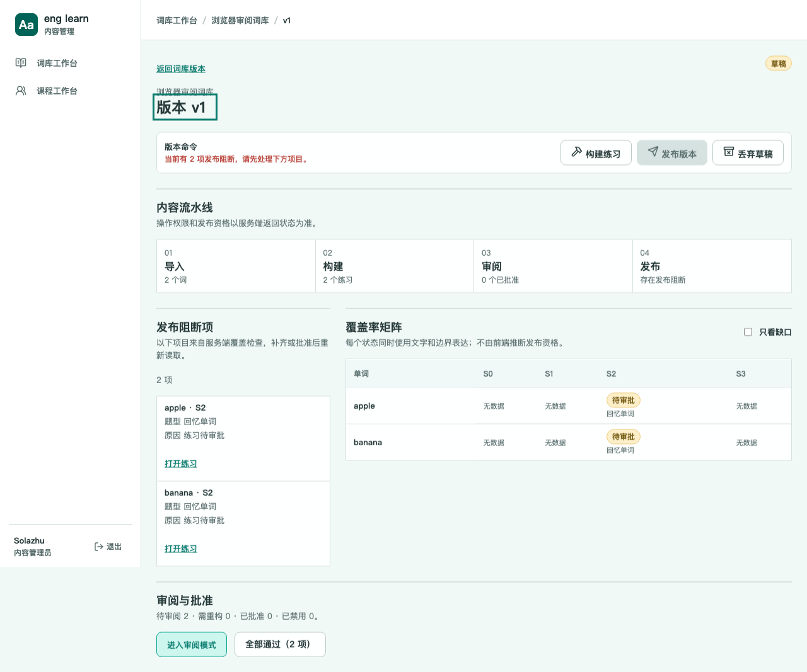
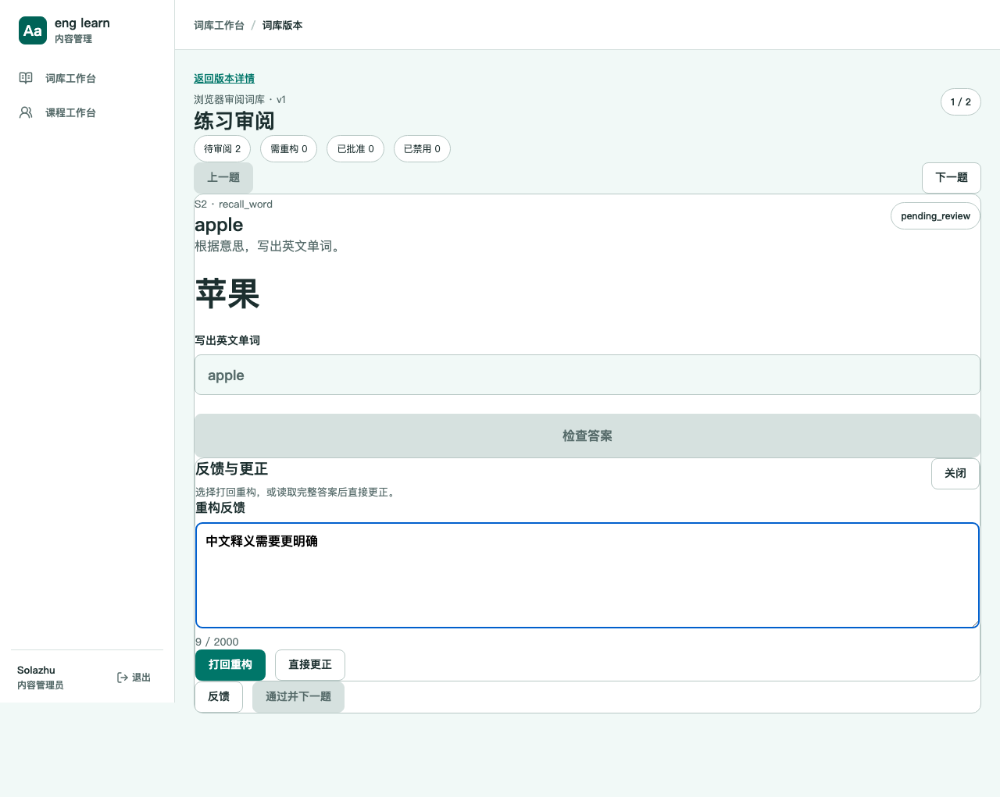
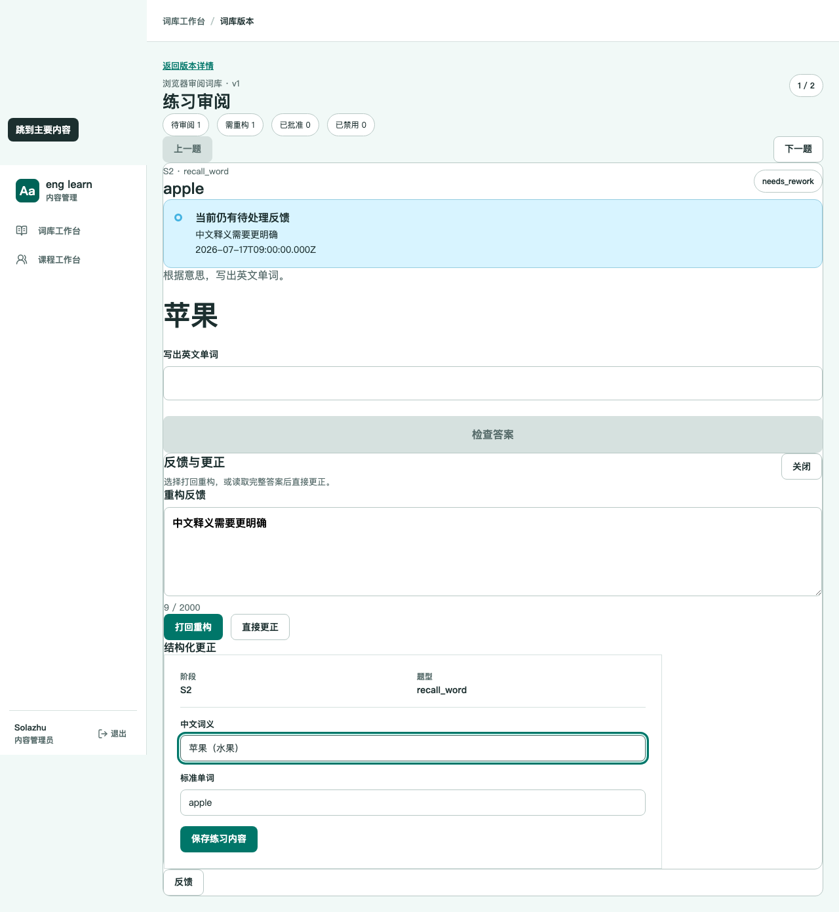
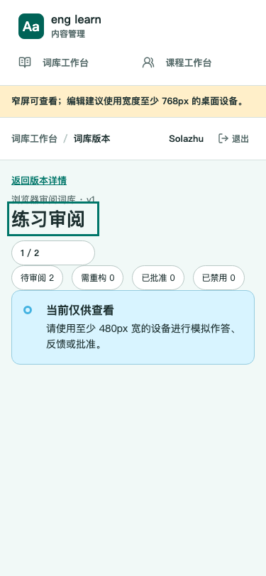

版本详情双路径
删除逐项勾选，保留状态摘要和两个明确动作。

Eng Learn · Admin Review
版本详情保留快速全部通过，同时把真实题型体验、反馈打回和结构化更正放进独立管理端工作区。审阅不进入学生课程运行态。
以下截图来自真实 Chromium 对本地生产页面的操作路径，不是静态概念图。
删除逐项勾选，保留状态摘要和两个明确动作。

反馈正文、计数和打回动作保持同一决策上下文。

按需读取完整练习；保存后清空旧判题并要求重新体验。

